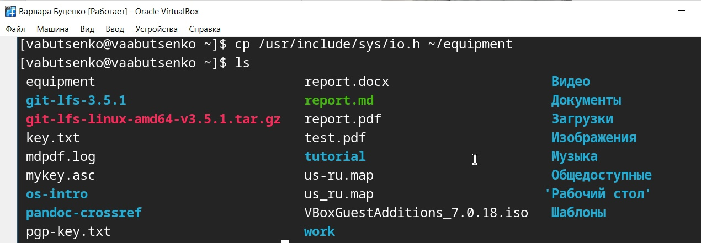
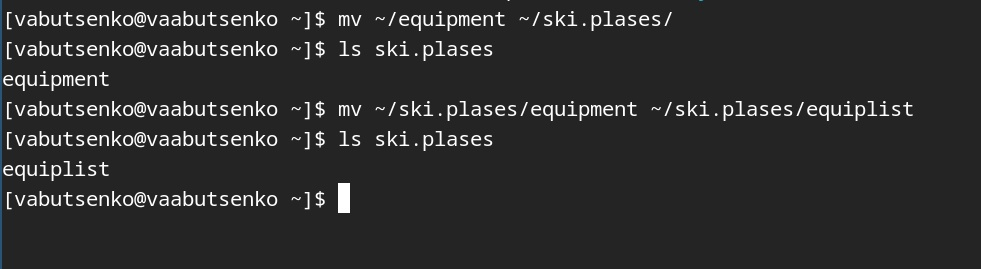
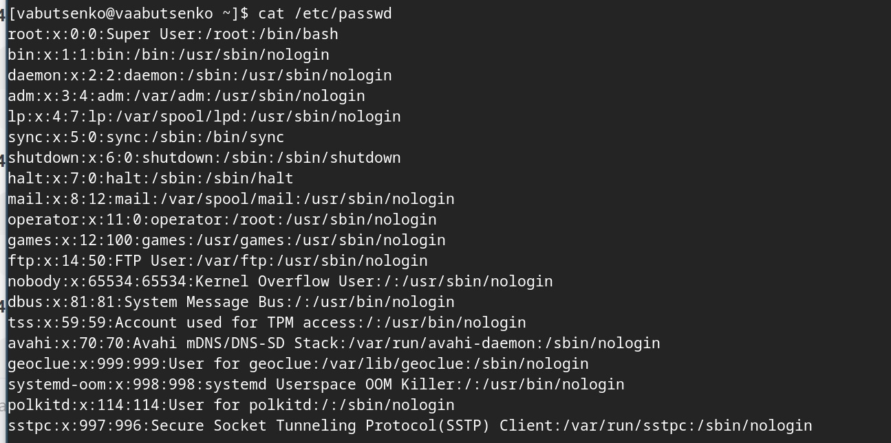
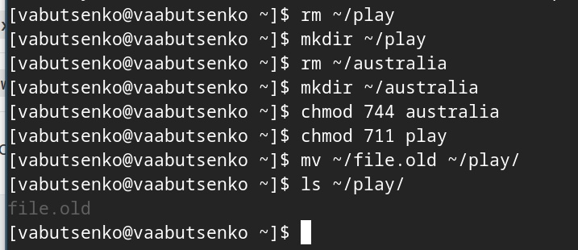
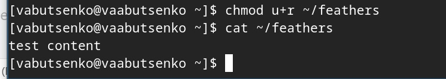
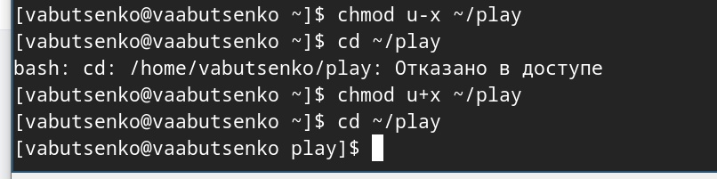
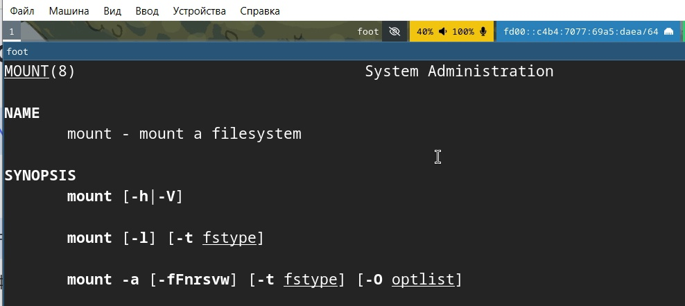
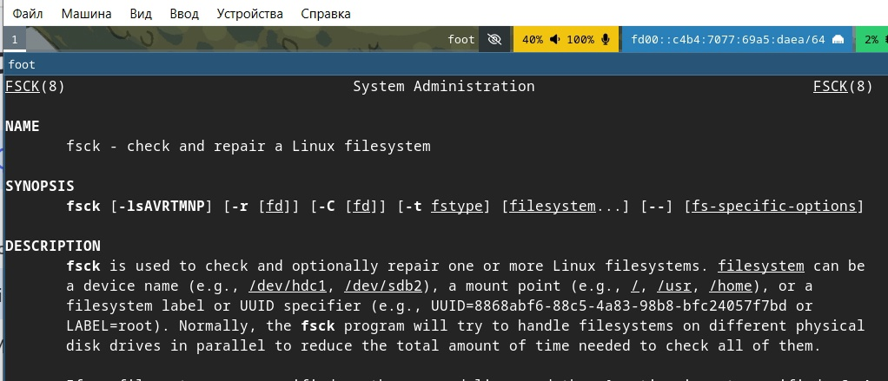
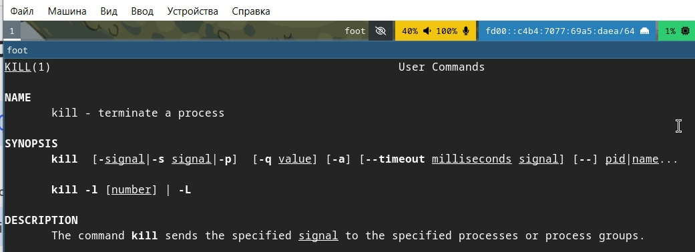

Информация
Докладчик
Вводная часть
Задание
Выполните все примеры, приведённые в первой части описания
лабораторной работы.
Выполните следующие действия, зафиксировав в отчёте по
лабораторной работе используемые при этом команды и результаты их
выполнения:
- 2.1. Скопируйте файл /usr/include/sys/io.h в домашний каталог и
назовите его equipment. Если файла io.h нет, то используйте любой другой
файл в каталоге /usr/include/sys/ вместо него.
- 2.2. В домашнем каталоге создайте директорию ~/ski.plases.
- 2.3. Переместите файл equipment в каталог ~/ski.plases.
- 2.4. Переименуйте файл ~/ski.plases/equipment в
~/ski.plases/equiplist.
- 2.5. Создайте в домашнем каталоге файл abc1 и скопируйте его в
каталог ~/ski.plases, назовите его equiplist2.
- 2.6. Создайте каталог с именем equipment в каталоге
~/ski.plases.
- 2.7. Переместите файлы ~/ski.plases/equiplist и equiplist2 в каталог
~/ski.plases/equipment.2.8. Создайте и переместите каталог ~/newdir в
каталог ~/ski.plases и назовите его plans.
- Определите опции команды chmod, необходимые для того, чтобы
присвоить перечисленным ниже файлам выделенные права доступа, считая,
что в начале таких прав нет:
- 3.1. drwxr–r– … australia
- 3.2. drwx–x–x … play
- 3.3. -r-xr–r– … my_os
- 3.4. -rw-rw-r– … feathers
- Проделайте приведённые ниже упражнения, записывая в отчёт по
лабораторной работе используемые при этом команды:
- 4.1. Просмотрите содержимое файла /etc/password.
- 4.2. Скопируйте файл ~/feathers в файл ~/file.old.
- 4.3. Переместите файл ~/file.old в каталог ~/play.
- 4.4. Скопируйте каталог ~/play в каталог ~/fun.
- 4.5. Переместите каталог ~/fun в каталог ~/play и назовите его
games.
- 4.6. Лишите владельца файла ~/feathers права на чтение.
- 4.7. Что произойдёт, если вы попытаетесь просмотреть файл ~/feathers
командой cat?
- 4.8. Что произойдёт, если вы попытаетесь скопировать файл
~/feathers?
- 4.9. Дайте владельцу файла ~/feathers право на чтение.
- 4.10. Лишите владельца каталога ~/play права на выполнение.
- 4.11. Перейдите в каталог ~/play. Что произошло?
- 4.12. Дайте владельцу каталога ~/play право на выполнение.
- Прочитайте man по командам mount, fsck, mkfs, kill и кратко их
охарактеризуйте, приведя примеры.
Выполнение лабораторной
работы
Выполнила все примеры, приведённые в первой части описания
лабораторной работы.
Выполнила следующие действия, зафиксировав в отчёте по
лабораторной работе используемые при этом команды и результаты их
выполнения:
2.1. Скопировала файл /usr/include/sys/io.h в домашний каталог и
назвала его equipment.
cp /usr/include/sys/io.h ~/equipment

Выполнение лабораторной
работы
2.2. В домашнем каталоге создала директорию ~/ski.plases.
команда mkdir ~/ski.plases

Выполнение лабораторной
работы
2.3. Переместила файл equipment в каталог ~/ski.plases.

Выполнение лабораторной
работы
2.4. Переименовала файл ~/ski.plases/equipment в
~/ski.plases/equiplist.
Выполнение лабораторной
работы
2.5. Создала в домашнем каталоге файл abc1 и скопировала его в
каталог ~/ski.plases, назвала его equiplist2.

Выполнение лабораторной
работы
2.6. Создала каталог с именем equipment в каталоге ~/ski.plases.

Выполнение лабораторной
работы
2.7. Переместила файлы ~/ski.plases/equiplist и equiplist2 в каталог
~/ski.plases/equipment.

Выполнение лабораторной
работы
2.8. Создала и переместила каталог ~/newdir в каталог ~/ski.plases и
назвала его plans
Выполнение лабораторной
работы
- Определила опции команды chmod, необходимые для того, чтобы
присвоить перечисленным ниже файлам выделенные права доступа, считая,
что в начале таких прав нет:
- 3.1. drwxr–r– … australia
- 3.2. drwx–x–x … play
- 3.3. -r-xr–r– … my_os
- 3.4. -rw-rw-r– … feathers

Выполнение лабораторной
работы
- Проделала приведённые ниже упражнения, записывая в отчёт по
лабораторной работе используемые при этом команды:
4.1. Просмотрела содержимое файла /etc/password.
cat /etc/password

Выполнение лабораторной
работы
4.2. Скопировала файл ~/feathers в файл ~/file.old.
cp ~/feathers ~/file.old
4.3. Переместила файл ~/file.old в каталог ~/play.
mv ~/file.old ~/play

Выполнение лабораторной
работы
4.4. Скопировала каталог ~/play в каталог ~/fun.
cp -r ~/play ~/fun

Выполнение лабораторной
работы
4.5. Переместила каталог ~/fun в каталог ~/play и назвола его
games.
mv ~/fun ~/play/games
Выполнение лабораторной
работы
4.6. Лишила владельца файла ~/feathers права на чтение.
chmod u-r ~/feathers

Выполнение лабораторной
работы
4.7. Что произойдёт, если вы попытаетесь просмотреть файл ~/feathers
командой cat?
cat ~/feathers
Вывелось на экран: отказано в доступе
Выполнение лабораторной
работы
4.8. Что произойдёт, если вы попытаетесь скопировать файл
~/feathers?
cp ~/feathers ~/feathers_copy
Невозможно открыть - отказано в доступе

Выполнение лабораторной
работы
4.9. Дала владельцу файла ~/feathers право на чтение.
chmod u+r ~/feathers

Выполнение лабораторной
работы
4.10. Лишила владельца каталога ~/play права на выполнение.
chmod u-x ~/play

Выполнение лабораторной
работы
4.11. Перейдите в каталог ~/play. Что произошло?
cd ~/play
Отказано в доступе
Выполнение лабораторной
работы
4.12. Дала владельцу каталога ~/play право на выполнение.
chmod u+x ~/play
Выполнение лабораторной
работы
- Прочитала man по командам mount, fsck, mkfs, kill и кратко их
охарактеризовала, приведя примеры.
- mount (монтирование файловых систем)
- пример: mount /dev/sda1 /mnt

Выполнение лабораторной
работы
- fsck (проверка и восстановление файловых систем)
- пример: fsck /dev/sda1

Выполнение лабораторной
работы
- mkfs (создание файловых систем)
- пример: mkfs.ext4 /dev/sda1

Выполнение лабораторной
работы
- kill (завершение процессов)
- пример: kill %1

Контрольные вопросы
- Дайте характеристику каждой файловой системе, существующей на
жёстком диске компьютера, на котором вы выполняли лабораторную
работу.
- Btrfs (B-tree File System)
- Тип: Современная журналируемая ФС с поддержкой снапшотов и
RAID.
- Разделы: / (корневой) и /home (домашний каталог).
- Размер: 17 ГБ (использовано 13 ГБ, свободно 3.8 ГБ).
Контрольные вопросы
- ext4 (Fourth Extended Filesystem)
- Тип: Стандартная журналируемая ФС для Linux.
- Раздел: /boot (загрузочный раздел).
Контрольные вопросы
- tmpfs (Temporary File System)
- Тип: ФС в оперативной памяти.
- Разделы: /dev/shm, /run, /tmp, /run/user/1000.
- Размер: От 1 МБ до 1.2 ГБ (данные хранятся только в RAM).
Контрольные вопросы
- devtmpfs
- Тип: Виртуальная ФС для устройств.
- Раздел: /dev.
- Размер: 4 МБ (используется ядром для устройств).
Контрольные вопросы
- vboxsf (VirtualBox Shared Folder)
- Тип: ФС для обмена файлами с хостовой ОС в VirtualBox.
- Раздел: /media/sf_work.
- Размер: 117 ГБ (использовано 98 ГБ, свободно 19 ГБ).
Контрольные вопросы
- 1.Btrfs — основная ФС для / и /home, обеспечивает гибкость и
отказоустойчивость.
- 2. ext4 — используется для /boot из-за совместимости с
загрузчиками.
- 3. tmpfs — ускоряет работу временных файлов (например, /tmp).
- 4. devtmpfs — автоматически управляет устройствами.
- 5. vboxsf — обеспечивает обмен данными с хостовой ОС в
VirtualBox.
Контрольные вопросы
- Приведите общую структуру файловой системы и дайте характеристику
каждой директории первого уровня этой структуры.
- В Linux используется стандартная иерархия файловой системы (FHS —
Filesystem Hierarchy Standard). Ниже приведена структура корневого
каталога (/) с описанием назначения каждой директории первого
уровня.
- / (Корневой каталог)
- Базовая точка монтирования всей файловой системы.
- /bin (Binaries)
- Основные исполняемые файлы (команды), доступные всем
пользователям.
Контрольные вопросы
- /boot
- Файлы, необходимые для загрузки системы (ядро, initramfs,
GRUB).
- /dev (Devices)
- Файлы устройств (жесткие диски, терминалы, USB и т.д.).
- /etc (Etcetera)
- Конфигурационные файлы системы и программ.
- /home
- Домашние каталоги пользователей.7. /lib и /lib64 (Libraries)
- Общие библиотеки для программ из /bin и /sbin.
- /media и /mnt
- /media — точка монтирования съемных носителей (USB, CD-ROM).
- /mnt — временное монтирование (например, сетевые диски).
Контрольные вопросы
- /opt (Optional)
- Программы, установленные вручную (не из пакетного менеджера).
- /proc (Processes)
- Виртуальная ФС, отображающая информацию о процессах и системе.
- /root
- Домашний каталог суперпользователя (root).
- /run
- Временные файлы, созданные при запуске системы (PID, сокеты).
- /sbin (System Binaries)
- Системные исполняемые файлы для root (например, fdisk,
iptables).
- /srv (Service)
- Данные сервисов (веб-сайты, FTP).
Контрольные вопросы
- /sys (System)
- Виртуальная ФС для взаимодействия с ядром (настройка
устройств).
- /tmp (Temporary)Временные файлы (очищаются при перезагрузке).
- /usr (User System Resources)
- Вторичная иерархия для программ и библиотек.
- /var (Variable)
- Изменяемые данные (логи, кэш, почта).
Контрольные вопросы
- Какая операция должна быть выполнена, чтобы содержимое некоторой
файловой системы было доступно операционной системе?
- Чтобы содержимое файловой системы стало доступно операционной
системе, необходимо выполнить монтирование (mounting). Это процесс
подключения файловой системы к определённой точке в дереве
каталогов.
Контрольные вопросы
- Назовите основные причины нарушения целостности файловой системы.
Как устранить повреждения файловой системы?
- Аварийное завершение работы
- Аппаратные сбои
- Ошибки ПО
- Человеческий фактор
- Переполнение диска
Контрольные вопросы
- Способы устранения повреждений:
- Проверка и восстановление (ext2/3/4, btrfs)
- Восстановление после переполнения
- Работа с bad-блоками
- Восстановление критических разделов
Контрольные вопросы
- Как создаётся файловая система?
Создание файловой системы — это процесс инициализации раздела
диска или другого блочного устройства для хранения данных в определённом
формате, который операционная система может распознавать и использовать.
Этот процесс включает:
Разметку структуры — создание необходимых метаданных, таблиц
размещения файлов (например, inode в ext4) и служебных областей
(суперблок, журнал).
Настройку параметров — задание размера блока, типа
журналирования, метки тома и других характеристик.
Форматирование — запись начальной структуры данных на устройство,
чтобы ОС могла взаимодействовать с ним через стандартные
интерфейсы
(чтение/запись файлов, управление правами и т.д.).
Контрольные вопросы
- Дайте характеристику командам для просмотра текстовых файлов.
- cat (concatenate)
- Вывод содержимого файла(-ов) в терминал целиком.
- less
- Постраничный просмотр с возможностью прокрутки.
- more
- Упрощённый аналог less (постраничный вывод).
- head
- Вывод первых строк файла (по умолчанию — 10).
- tail
- Вывод последних строк файла (по умолчанию — 10).6. nl (number
lines)
- Вывод содержимого с нумерацией строк.
Контрольные вопросы
- grep + cat (фильтрация)
- Поиск и вывод только нужных строк.
- Приведите основные возможности команды cp в Linux.
- -rРекурсивное копирование каталогов
- -iПодтверждение перед перезаписью
- -uКопирование только новых/изменённых файлов
- -pСохранение прав и временных меток
- -aАрхивное копирование (-rp)
- -lСоздание жёсткой ссылки
- -sСоздание символической ссылки
- -fПринудительное копирование
- -vВывод информации о процессе
Контрольные вопросы
- Приведите основные возможности команды mv в Linux.
Переименование файла/каталога
mv старое_имя новое_имя
Перемещение файла в другую директорию
mv файл целевая_директория/
Перемещение нескольких файлов
mv файл1 файл2 файл3 целевая_директория/
Перемещение каталога (рекурсивно)
mv -T исходная_директория целевая_директория
Контрольные вопросы
- Что такое права доступа? Как они могут быть изменены?
Права доступа — это набор разрешений и ограничений, определяющих,
какие операции могут выполняться над файлом или ресурсом в операционной
системе.
Права доступа определяют, кто может читать, записывать, изменять
или выполнять определенные файлы или ресурсы.
Права доступа могут быть изменены разными способами в зависимости
от операционной системы. Вот несколько примеров:
- Команда chmod: изменяет права доступа к файлам и каталогам.
- Команда chown: изменяет владельца файла или каталога.
- Команда chgrp: изменяет группу, к которой принадлежит файл.
Выводы
- В ходе работы были изучены основные команды для работы с файлами и
каталогами в Linux, такие как cp, mv, mkdir, chmod, а также команды для
управления файловыми системами (mount, fsck, mkfs) и процессами
(kill).
- Приобретены практические навыки настройки прав доступа и управления
файловой структурой.
- Выполнены все задания, включая создание и удаление каталогов,
проверку наличия подкаталогов и анализ прав доступа. Это позволило
закрепить теоретические знания на практике.